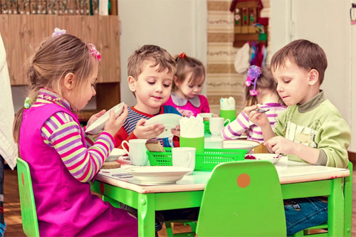
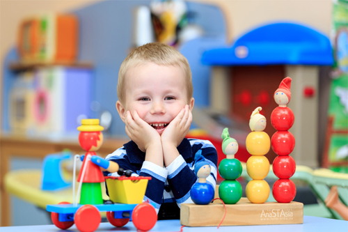
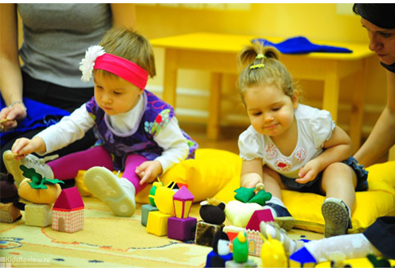
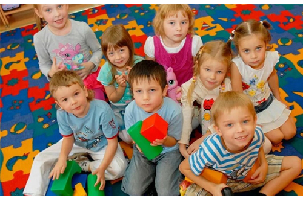
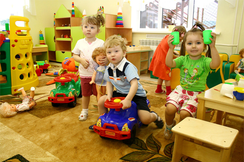
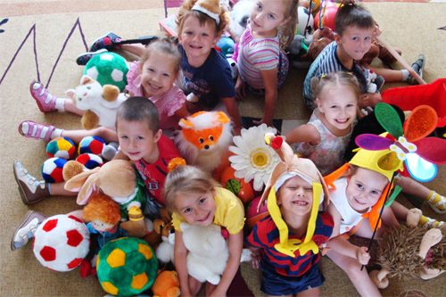
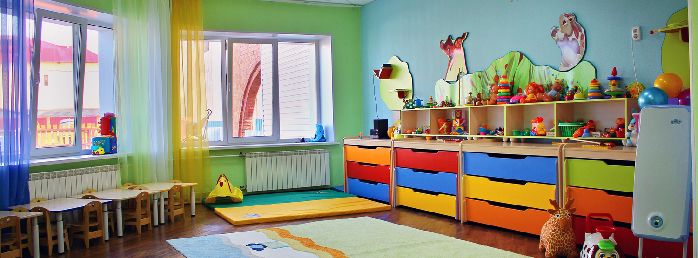

+7 919 500 49 11
+7 919 500 49 1126 24 02






Детский сад «Чудо-сад» с логопедическим уклоном стремится обеспечить благоприятную среду, в которой будет расти и развиваться ваш малыш. Мы поможем вашему ребенку стать более самостоятельным, уверенным в себе и развиваться соответственно возрасту.
МЫ ПОЗАБОТИМСЯ О
ВАШЕМ МАЛЫШЕ
ВАШЕМ МАЛЫШЕ
Мы стремимся создать благоприятную, мотивирующую
и приветливую атмосферу для всех детей.
Немного о "Чудо-сад":
- работаем для вас с 7 утра и до 19 вечера
- в штате логопед-дефектолог, психолог с ежедневным наблюдением за детками
- вкусное 5-ти разовое питание, соответствующие всем нормам СанПин по возрасту (отдельное меню для детей с ограничениями в рационе)
- осмотры врача-педиатра дважды в неделю
- *веселые праздники (утренники, дни рождения) Опытные и любящие педагоги найдут подход именно к вашему малышу.
Читайте дальше или свяжитесь с нами, чтобы узнать больше.
КОНТАКТЫ
Хотите узнать больше о нашем центре? Свяжитесь с нами, и мы с радостью ответим на все ваши вопросы. Частный детский сад "Чудо-сад" ждет вас. ул. Орловская, д.4 Чудо-сад43@mail.ru +7 919 500 49 11
